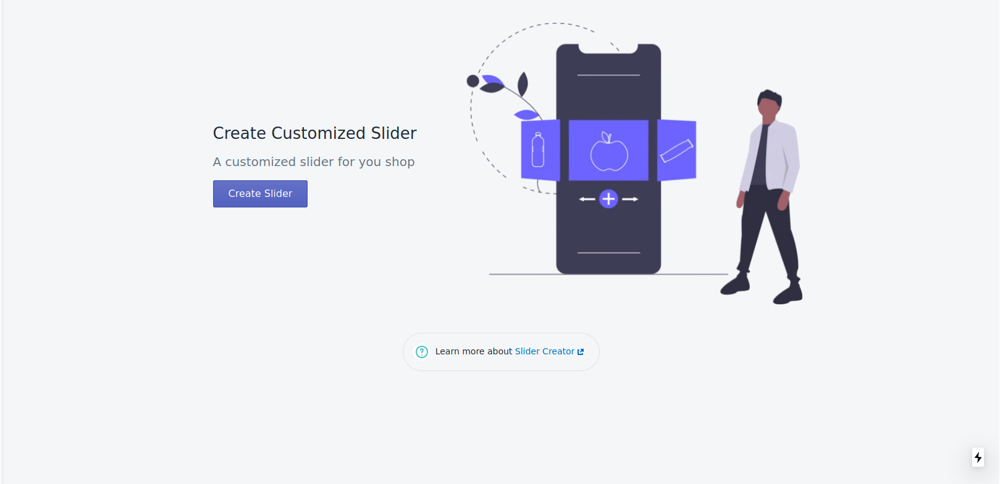
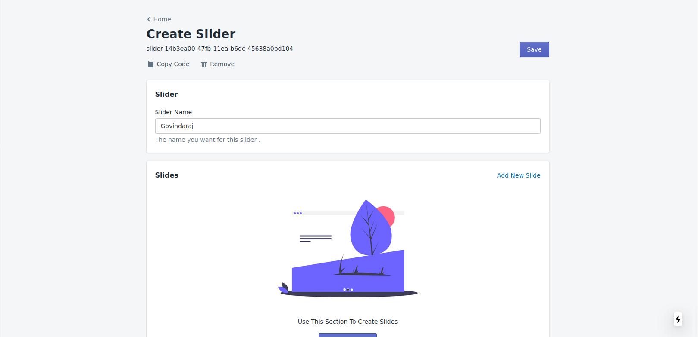
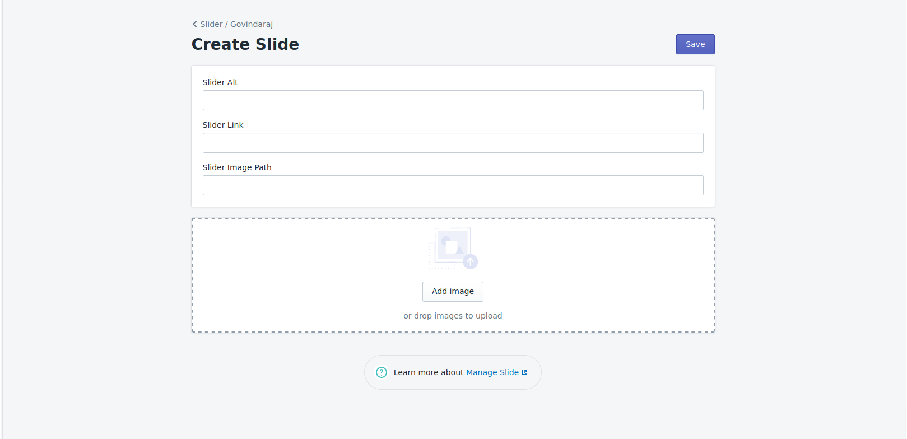

Slider Creator
Slider Creator is used to create a slide Used to create and manage the slide it make easy for the Shop owner to create a slider
Manage Slider
This Page is used to Mange the Sider. below are some of the Important Funciton of this Screen
- Create Slider
- Edit Slider
- Edit Slider Name
- Edit Slider Status
- Edit Slide Order
Create Slider
We can Create Slider
Manage Slide
Used to Mange the Slides
